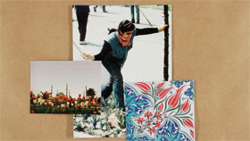

Kirik Beyaz Laleler
Off-White Tulips

Aykan Safoǧlu – D/Türkei 2013 – 24 Min. – BluRay – türk. OmeU
R+P+V: Aykan Safoǧlu – T: Olof Dreijer, Hanna Bergfors
Großer Preis der Stadt Oberhausen
James Baldwins ausgedehnte Aufenthalte in Istanbul stehen im Mittelpunkt des Videos, das die Grenzen des Autobiographischen vorwiegend mittels gefunden Materials wie etwa Sedat Pakays Fotografien untersucht. – Kurzfilmtage Oberhausen
Aykan Safoǧlu, born in 1984 in Istanbul, Turkey. He lives and works in Berlin and NYC. BA in “Film” at Istanbul Bilgi University and MA in “Art in Context” at the University of the Arts Berlin. He is currently doing his MFA in Photography at Bard College.